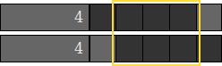
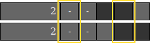

Here's a tutorial on how to solve a simple picross puzzle with some stripes, have fun!
To the left you see an example of a picross puzzle. The numbers tell you how many
consecutive squares in the row or column should be coloured.
For example, the bottom row has a 3 and a 1. That means that three consecutive squares
need to be coloured, then there needs to be some empty space, and then one more square is
coloured.
Since there are in total five squares to fill, there's only one way to do that:
This means we have solved our first row, hooray!
Most puzzles don't have a row where you can colour all squares right away, so let's look at a slightly modified version of this puzzle to make it a bit more interesting.
If we look at a row with a 4, there are two possibilities: it can be the 4 squares on the right, or on the left. In both cases the middle 3 squares are filled, so we can colour them already and wait for later revelations to see if the right or the left square should be coloured.

If you've added information to a row, it often makes sense to check if that gives you more information for affected columns.
The affected column with a 3 for example now has one less possibility. Because of that, we
now know one square that can be coloured.
Also, we know that the top square can never be coloured, so we can mark it as empty.
We just added information to a column so let's look at the corresponding row.
To the left of the square that we know has to be empty, there is not enough space for 2 squares. That means the 2 squares have to be on its right. That leaves two possibilities.

And that's the basics of how to solve a picross puzzle.
You can complete the puzzle over here to the right (click to colour a square black, Ctrl-click one to mark it as empty), or you can try some of my other puzzles.